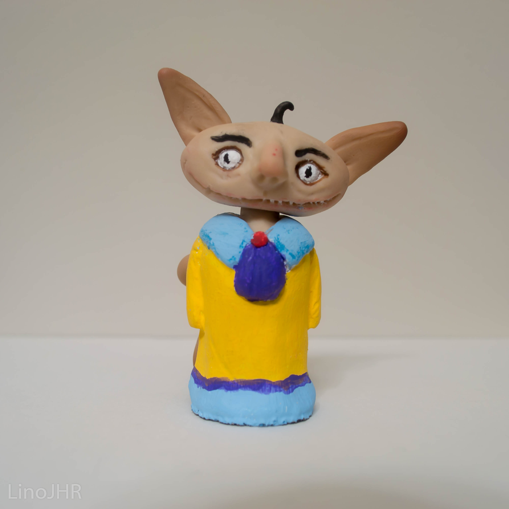
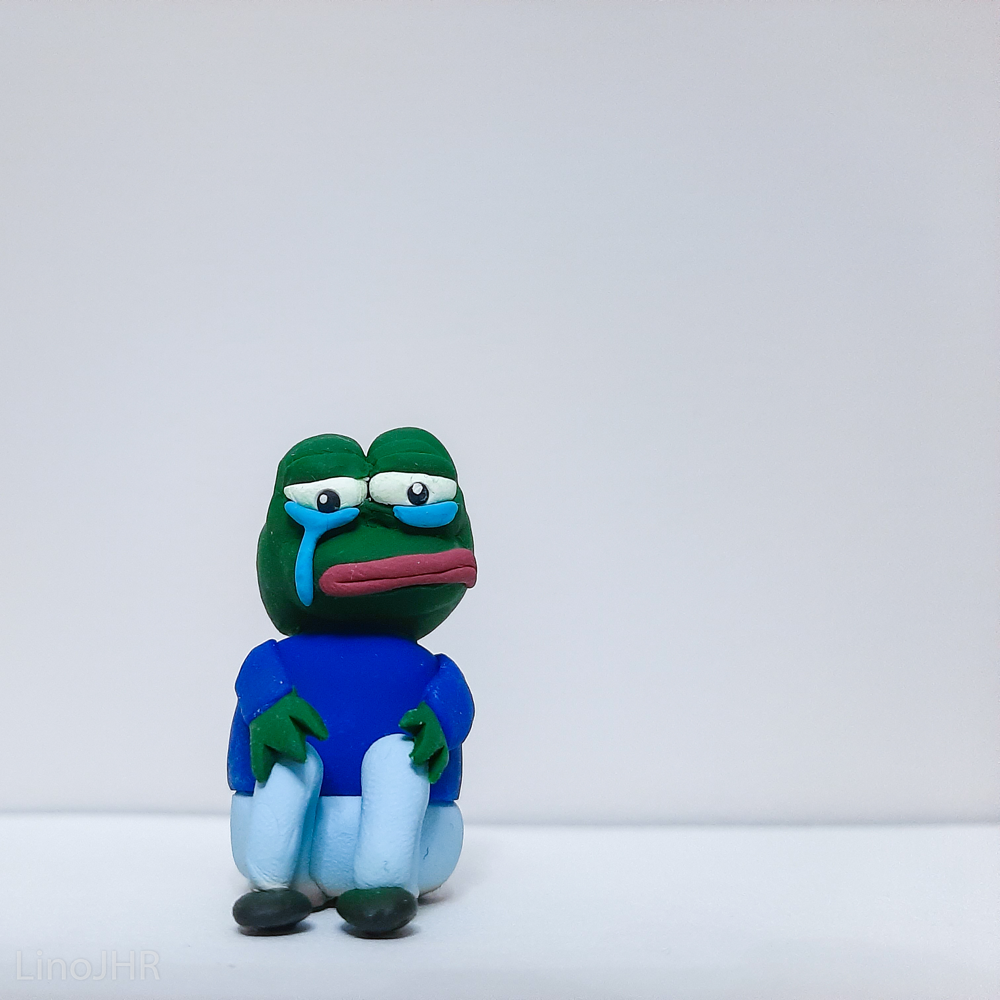
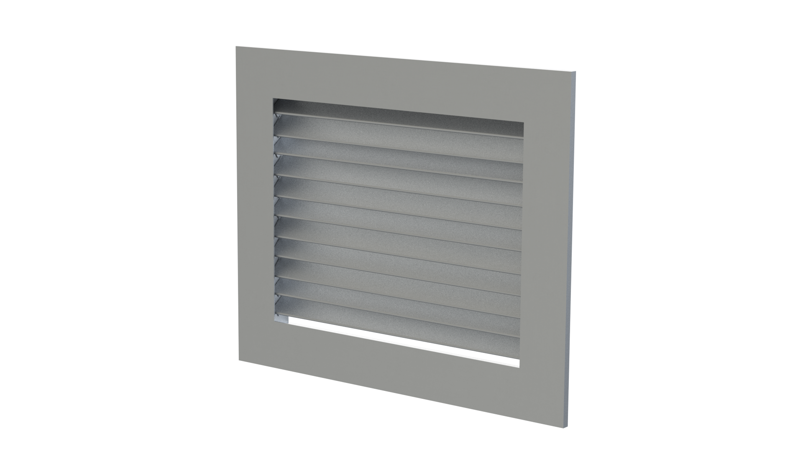

Gallery of work
In this section of the website you can see a few of the things that I have worked on, or that I like to do in my free time, sometimes.
In this section of the website you can see a few of the things that I have worked on, or that I like to do in my free time, sometimes.
|  | Figure made with polymer clay in 2021. Is not base on an existing character. |
 |

|
|---|---|---|---|
|  | As the previous figures, this one was also made with polymer clay, which is a material that can harden after baking. This character is from a comic, is called Pepe the frog. |
Why do I like to use polymer clay?When I was a child I used to live in my mom's clinic, the area was conjusted, so I couldn't go out that much as a kid,
my family was also protective but I'm glad they did because I like they way I have become. Since I couldn't go out and my sister was 14 years older than me,
I didn't have much things to do, so I used to play with clay, drawing and plants in my backyard. The list of softwares that I use for my digital work are:

|
|
I have a friend back home who I do logos or photoediting for him and his father when they need it. Sometimes they pay me, or sometimes I tell him not to pay me. This was a logo for a pharmacy they are about to open in their hometown. |

|